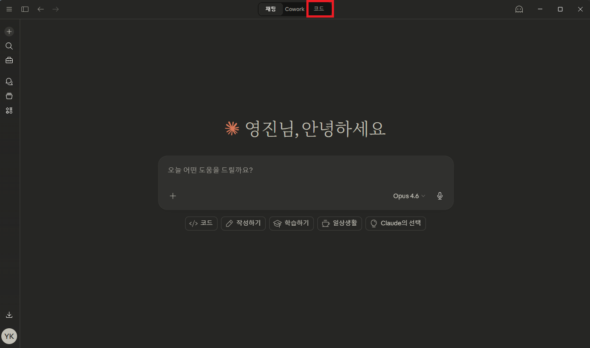
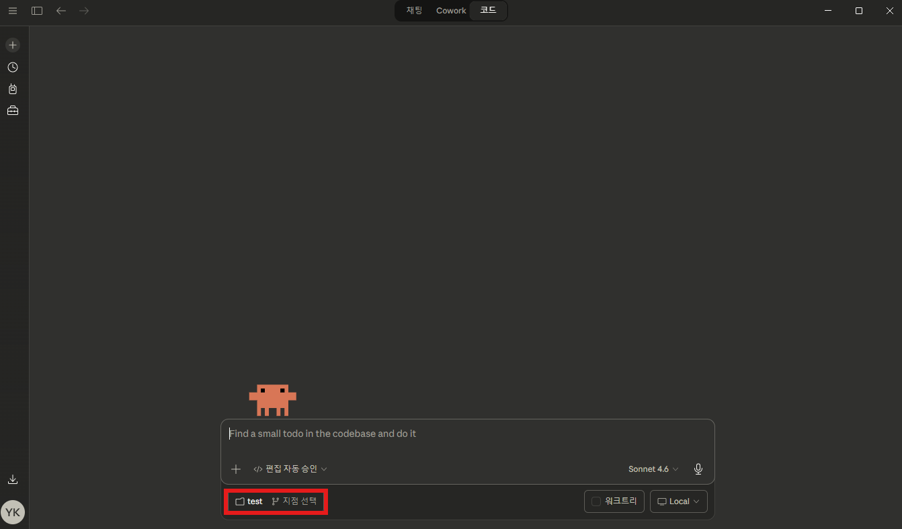
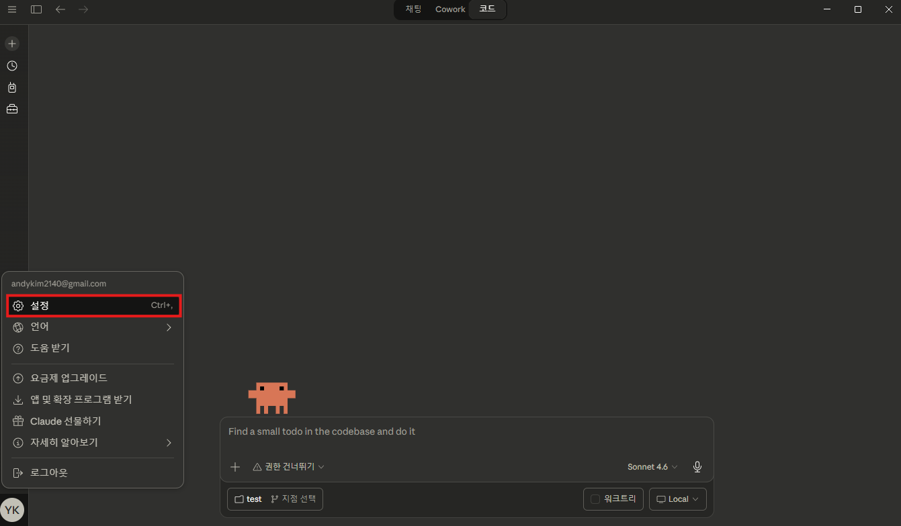
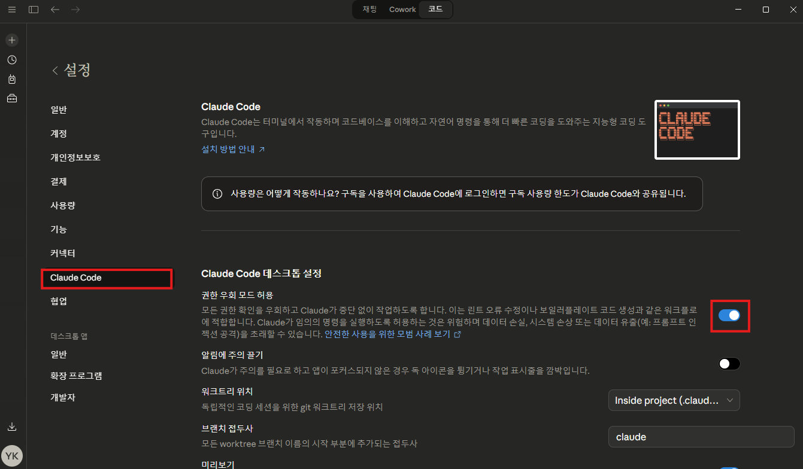
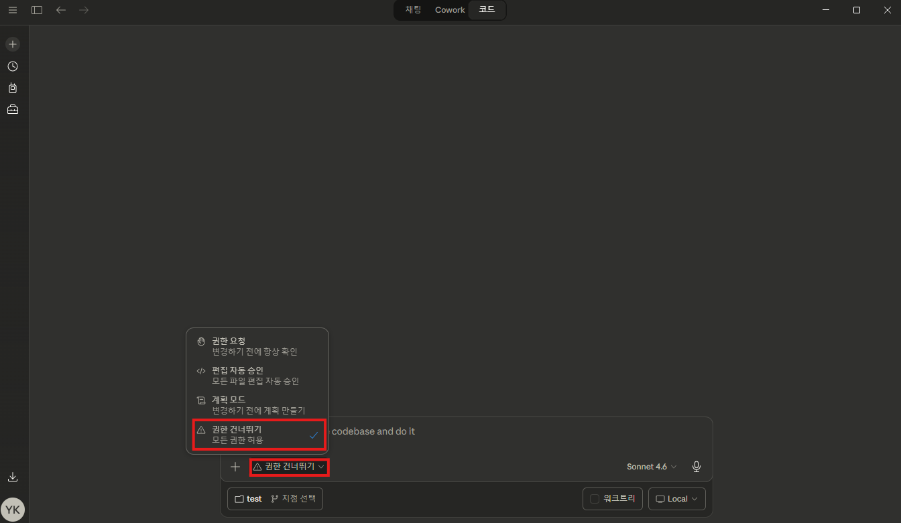

만들고 싶은 걸 한국어로 설명하세요.
AI가 설계하고, 코드까지 짜줍니다.
프로젝트를 처음 시작할 때만 하면 됩니다. 이미 했으면 건너뛰세요.
프로젝트당 1번Claude 데스크톱 앱을 아직 설치하지 않았다면 먼저 설치해야 합니다.
GitHub 페이지 →에서 Code → Download ZIP을 클릭해서 다운로드합니다. 압축을 풀어서 원하는 위치에 저장해두세요.
sb-flow 폴더 안의 setup.bat을 더블클릭하면 폴더 선택 창이 뜹니다. 내 프로젝트를 만들 폴더를 선택하면 필요한 파일이 자동으로 복사됩니다.
Claude 데스크톱 앱을 열고 상단 메뉴에서 "코드" 탭을 클릭합니다.

하단의 폴더 이름 옆 "지점 선택" 버튼을 클릭한 뒤, setup.bat으로 설정한 프로젝트 폴더를 선택합니다.

왼쪽 아래의 설정 버튼(⚙️)을 클릭합니다.

설정에서 "권한 우회 모드 허용" 토글을 켭니다.

입력창 왼쪽 아래의 권한 버튼을 클릭하고 "권한 건너뛰기"를 선택합니다. Claude가 매번 확인 없이 파일을 자유롭게 수정할 수 있게 됩니다.

대화창에 아래를 입력하면 Claude가 Node.js 설치 확인부터 bkit, Vercel 스킬 등 필요한 도구를 자동으로 설치합니다.
/sb-oneshot을 실행하면 됩니다.이것만 하면 AI가 설계 → 계획 → 코드 작성까지 알아서 합니다.
새 기능마다 1번prd/ 폴더에 넣으세요 — AI가 자동으로 찾습니다.designs/ 폴더에 넣으세요designs/stitch/ 폴더에 넣으세요designs/design.md·designs/design-tokens.css·designs/design-constitution.md가 자동 생성됩니다.
designs/ 폴더에 .pen 파일을 넣고 실행 | Stitch: ZIP 압축 해제 후 designs/stitch/ 폴더에 넣고 실행designs/design.md·designs/design-tokens.css를 만들어줍니다. designs/design-constitution.md(정부 UIUX 가이드라인) 기준 위반 항목은 자동 교정됩니다./sb-oneshot 포모도로 타이머. 25분 집중, 5분 휴식 사이클. 시작/정지 버튼, 오늘 완료 횟수 표시./sb-oneshot 식단 기록 앱. 음식 검색해서 끼니별 기록, 하루 칼로리 합계 표시./sb-oneshot 가계부. 수입/지출 입력, 카테고리별 분류, 월별 차트.
start.bat으로 서버를 켠 후 "계속"을 입력하세요.start.bat을 더블클릭하면 개발 서버가 시작되고 브라우저가 열립니다.end.bat을 더블클릭하세요.
코드가 만들어졌으니 마음에 안 드는 부분을 고치세요.
원하는 만큼 반복한국어로 편하게 말하면 됩니다. 코드를 알 필요 없어요.
디자인, 색상, 레이아웃 변경
새로운 기능 요청
로직이나 동작 방식 수정
오류나 문제 해결
설계대로 만들어졌는지 확인 → 보고서 → 문서 정리
수정 완료 후 1번위에서 아래로 순서대로 실행하세요. 선택 단계는 건너뛰어도 됩니다.
design-tokens.css 변수로 구현됐는지 검사합니다.
하드코딩(#hex, px 고정값)이 있으면 Claude가 안내하고 즉시 수정합니다.
/pdca iterate로 자동 개선합니다.
Claude Code를 껐다 켰을 때 상황별 대응법
버그 수정, UI 변경 등 작은 작업
완전히 새로운 기능 개발
검증/보고 등 남은 단계 이어서
현재 상태와 다음 할 일 자동 안내
.pen 또는 Stitch 기반으로 토큰 생성. 정부 가이드라인(design-constitution.md) 기준 자동 교정 포함.
포모도로-타이머, 회원가입, 가계부. 한국어도 됩니다.
/sb-guide를 실행해서 현재 상태를 확인하세요.
/pdca analyze와 /pdca report는 하는 게 좋습니다. 설계대로 만들어졌는지 확인하고, 기록을 남기는 거예요. 나머지는 건너뛰어도 됩니다.
sb-flow-workflow.html에 전체 6단계 워크플로우 가이드가 있습니다. /pdca 명령어를 단계별로 직접 제어하고 싶을 때 참고하세요.